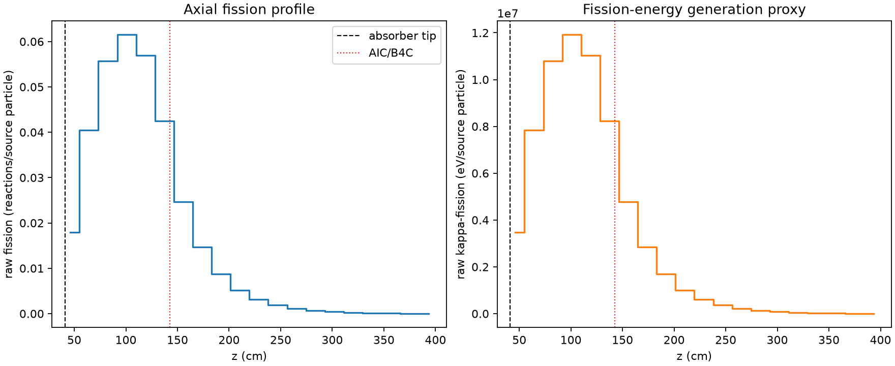
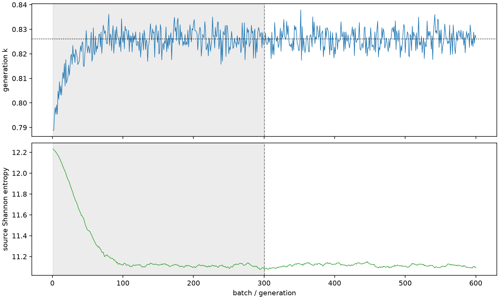

| field | value |
|---|---|
| experiment | V2-STAGE_256_OGRENCI_04-0023 |
| k | 0.8260939221090359 |
| MC standard error | 0.0001629482261787283 |
| seconds | 932.8152014340012 |
| acceptance | not_assessed |
| convergence | review_required |
Completed is output integrity only; physical and statistical review required. Zero tallies do not prove zero production or zero uncertainty.
| diagnostic | value |
|---|---|
| geometric fuel voxels | 5280 |
| zero fission tally voxels | 0 |
| low signal fuel voxels | 525 |
| low signal fission share | 0.0001889105379635898 |
| low signal kappa share | 0.00018892459881739065 |
| important fission share | 0.9500504413290488 |
| previous filter included | 4755 |
| duration estimate s | 1562.5173488400023 |
| actual minus estimate s | -629.7021474060011 |
| fission relative MC error | statistics |
|---|---|
| all_geometric_fuel | {"voxels": 5280, "positive_mean_voxels": 5280, "zero_mean_voxels": 0, "undefined_relative_error_voxels": 0, "median": 0.02618673360600065, "p95": 0.2958235877552636, "maximum": 0.7068037491232636} |
| low_signal | {"voxels": 525, "positive_mean_voxels": 525, "zero_mean_voxels": 0, "undefined_relative_error_voxels": 0, "median": 0.2979957528932673, "p95": 0.5121827960023504, "maximum": 0.7068037491232636} |
| important_95pct | {"voxels": 2245, "positive_mean_voxels": 2245, "zero_mean_voxels": 0, "undefined_relative_error_voxels": 0, "median": 0.008362345596707512, "p95": 0.016660966393905487, "maximum": 0.019687282775236493} |
| outside_previous_filter | {"voxels": 525, "positive_mean_voxels": 525, "zero_mean_voxels": 0, "undefined_relative_error_voxels": 0, "median": 0.2979957528932673, "p95": 0.5121827960023504, "maximum": 0.7068037491232636} |
| kappa_fission relative MC error | statistics |
|---|---|
| all_geometric_fuel | {"voxels": 5280, "positive_mean_voxels": 5280, "zero_mean_voxels": 0, "undefined_relative_error_voxels": 0, "median": 0.026143050778694124, "p95": 0.295167340372824, "maximum": 0.7062708475957463} |
| low_signal | {"voxels": 525, "positive_mean_voxels": 525, "zero_mean_voxels": 0, "undefined_relative_error_voxels": 0, "median": 0.2975521461124395, "p95": 0.510915792281301, "maximum": 0.7062708475957463} |
| important_95pct | {"voxels": 2245, "positive_mean_voxels": 2245, "zero_mean_voxels": 0, "undefined_relative_error_voxels": 0, "median": 0.008348370356890419, "p95": 0.016635446679456028, "maximum": 0.01965550599295452} |
| outside_previous_filter | {"voxels": 525, "positive_mean_voxels": 525, "zero_mean_voxels": 0, "undefined_relative_error_voxels": 0, "median": 0.2975521461124395, "p95": 0.510915792281301, "maximum": 0.7062708475957463} |
| axial bin | fission share | kappa-fission share |
|---|---|---|
| 1 | 0.053286811310444035 | 0.05328776675483921 |
| 2 | 0.12028384709569105 | 0.12028132111993789 |
| 3 | 0.16583925959649332 | 0.1658348569011957 |
| 4 | 0.18297463146571766 | 0.1829707108096214 |
| 5 | 0.16928138186975017 | 0.16927754520619742 |
| 6 | 0.12657993368355458 | 0.12657878387277147 |
| 7 | 0.07340630440744673 | 0.07341207681198635 |
| 8 | 0.043660541588038594 | 0.04366409521897561 |
| 9 | 0.0260658345278579 | 0.02606805372177602 |
| 10 | 0.015373280879058131 | 0.01537466121241355 |
| 11 | 0.009259239308066073 | 0.00926000970528243 |
| 12 | 0.005569297787360287 | 0.005569800035279336 |
| 13 | 0.003411755937779093 | 0.003412049188858111 |
| 14 | 0.002088107646544164 | 0.002088269692004101 |
| 15 | 0.0012811777435840367 | 0.001281314902391346 |
| 16 | 0.000765141090859709 | 0.0007651735873033296 |
| 17 | 0.00044312790820369267 | 0.00044315242343247093 |
| 18 | 0.0002526904265176162 | 0.00025271061800266576 |
| 19 | 0.00013356855227910207 | 0.00013357441418891666 |
| 20 | 4.406717475410378e-05 | 4.4073803542578236e-05 |
Histories include the inactive-to-active transition at batch 300. kappa-fission approximates fission energy production, not total heat deposition.

